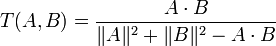
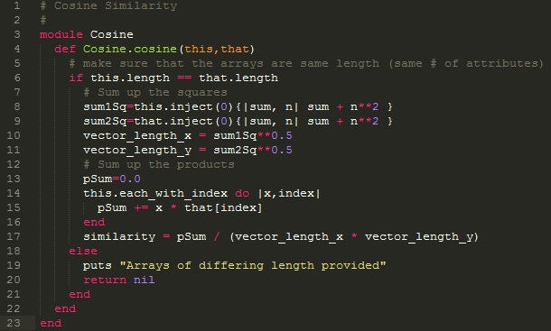

Similarity Metrics
Introduction
Similarity metrics provide a way for making a numerical measurement of how similar two data objects are. This is useful in data mining because similarity metrics are used in many data mining algorithms. For example, the K-Means clustering algorithms use similarity metrics internally to determine the closest objects to a cluster. Similarity metrics are also used in classification and anomaly detection. Below are several similarity metrics, their descriptions, and an implementation in Ruby by me (when available).
Euclidean Distance
Euclidean distance of two data objects a and b is the length of the line segment connecting the two objects. To calculate it you take each dimension of the objects a and b and subtract one from the other. Then square that result and add it to a sum. Once you have summed up every dimension take the square root of the sum. Euclidean distance works well dense, continuous data sets.

Figure 1. Euclidean distance in Ruby.
Simple Matching Coefficient (SMC)
Simple matching coefficient is a similarity metric that is only for binary values. To calculate the SMC you count the number of times the attributes in a record match and then divide that number by the total number of attributes in the objects. SMC is not useful for asymmetric data as it counts the matching zero values which are not important in asymmetric data.

Figure 2. SMC in Ruby
Jaccard Coefficient
The Jaccard coefficient is used for asymmetric binary attributes. The Jaccard coefficient is calculated like SMC except it does not count matching zero values.

Figure 3. Jaccard in Ruby
Extended Jaccard Coefficient (Tanimoto Coefficient)
The Extended Jaccard coefficient or Tanimoto Coefficient is distance metric that is useful for document data. In the case of binary attributes it reduces to the Jaccard Coefficient.
Figure 4. Tanimoto Coefficient, image from Wikipedia
Pearson's Correlation
Pearson's Correlation is a measure of the linear relationship between two data objects. Works with either binary or continuous variables. To calculate Pearson's Correlation for two data objects x and y take the covariance of x and y divided by the standard deviation of x times the standard deviation of y.

Figure 5. Pearson's Correlation
Cosine similarity
Cosine similarity is the measure of the similarity between two vectors. Cosine similarity is used commonly for document term vectors because it ignores zero to zero matches in vectors. In this way it is very similar to Jaccard however it can handle non-binary data as well. To calculate the Cosine similarity of x and y take x dotted with y divided by the vector length of x times the vector length of y.
Figure 6. Cosine Similarity in Ruby.